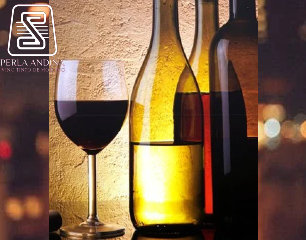

Catálogo
VinosExóticosEc
El vino, compañero fiel para el asado del domingo, para esa cita a la que quisiste darle un toque romántico o para esa juntada con amigos para brindar por un cumpleaños (o simplemente porque sí).

Vino Tinto de Mortiño
Presentación: Estandar 750ML
Perla Andina: Producto artesanalTérmino: Dulce/Semi-seco
Vino tinto artesanal de mortiño; marca Perla Andina, elaborado por los comuneros de Quinticusig con los más altos estándares de producción.
Ideal para todo tipo de celebraciones.
Precio: $12,00
Vino Tinto de Mortiño
Presentación: Estandar 750ML
Perla Andina: Producto artesanalTérmino: Dulce/Semi-seco
Vino tinto artesanal de mortiño; marca Perla Andina, elaborado por los comuneros de Quinticusig con los más altos estándares de producción.
Ideal para todo tipo de celebraciones.
Precio: $12,00
Vino Tinto de Mortiño
Presentación: Souvenir 375ML
Perla Andina: Producto artesanalTérmino: Dulce/Semi-seco
El producto manufacturado mantiene los mismos estándares de producción, su naturaleza es de mortiño, y se extrae de los pantanos de los Andes.
Precio: $9,00
Vino Tinto de Mortiño
Presentación: Calavera
750ML, 360ML, 125ML
Perla Andina: Producto artesanalTérmino: Dulce/Semi-seco
Diseño único que simboliza el detalle perfecto para las fechas de Halloween o simplemente te identificas con un estilo diferente, acompañado de nuestro Vino Tinto por su naturaleza de mortiño manteniendo los mismos estándares de calidad.
Precio:
750ML: $22,00
360ML: $12,00 |
125ML: $8,00
Características
Principales y Otras
Vino tinto de Mortiño de los andes 100% Natural,
Diferentes Marcas y Presentaciones.
El mortiño, conocido también como arándano, blueberry o uva de monte, crece de manera silvestre en los páramos andinos de Ecuador, provee beneficios antioxidantes, tiene un alto contenido de fósforo, fibra, calcio y vitaminas B1-C.
Características Principales
Marca:Perla Andina
Variedad:Tinto
Término:Dulce/Semi-seco y Seco
Varietal:Tannat Andino
Volumen Total:
Estandar: 750ML
Souvenir: 375ML
Calavera: 750, 360, 125 ML
Imperial: 1800ML
Tipo Envase:Botella
Formato de Venta:Unidad
Unidades por Pack:1
Otras Características
Regiones:Elaborado en Quinticusig-Sigchos
Aroma:Frutos rojos
Tiempo de Barricada:12 meses
Temperatura ideal de consumo:25°C
Cantidad:1
Usos recomendados:Con medida
Es orgánico:Sí
Graduación alcohólica:10%
Cantidad de packs:1
Tipo de unidad:Ml
Vino artesanal de Mortiño
El vino de mortiño es una bebida obtenida de la uva de monte, el mortiño(arándano), mediante la fermentación alcohólica de su zumo. La fermentación se produce por la acción metabólica de levaduras que transforman los azúcares del fruto en alcohol etílico y gas en forma de dióxido de carbono. El azucar y los ácidos que poseen las frutas hace que sean suficientes para el desarrollo de la fermentación. No obstante, el vino es una suma de un conjunto de factores ambientales: clima, latitud, altitud, horas luz, temperatura, etc.
{kind=link}
{kind=link}
{kind=link}
{kind=link}
{kind=link}
Presentación VinosExóticosEc.
Vinos Nacionales e Importados
“Elaborar sensaciones y guardarlas en cada botella para desbordarlas en el momento oportuno”
La empresa VinosExóticosEc fue creada de la necesidad de las personas de encontrar un producto diferente al ya establecido en el mercado, este producto no solo es diferente en su composición si no también la naturaleza de su elaboración, producido por: los comuneros de Quinticusig-Sigchos de forma artesanal(Vino tinto de mortiño); así, esta necesidad e ímpetu imperante de colaborar a los productos rurales, con logística y ventas, es nuestra forma de aporte a las comunidades.
Misión
Satisfacer las necesidades de los clientes, ofreciendo un buen producto basado en nuestra alta calidad de elaboración, distribución, compromiso de nuestro personal y a precios comprensivos.
Visión
Ser una empresa lider en el mercado de los vinos, manteniedo buenos precios, servicios y teniendo una mejora constante en la calidad de nuestros productos.
Valores
compromiso: Cumplir con los compromisos adquiridos por y para la organización comunitaria y el cliente.
Servicio: Dar respuesta a las necesidades del consumidor con actitud de entrega, colaboración y espíritu de atención.
Calidad: Lograr la satisfacción de nuestros clientes al proveerles de nuestros productos.
Tips y
Entradas
Los vinos guardan diferentes proporciones de sabores y características. Conózcalos y elija el que más se ajuste a su paladar.
Savores del vino: Dulzor, Acidez, Taninos, Cuerpo, Familias de sabores.
Bebida nacional por excelencia, es ese condimento que convierte cualquier instante en una ocasión más especial.
-
Sabores del vino
25 July 2018Dulzor: se detecta con la punta de la lengua y es lo que primero se siente al beber vino.
Acidez:Acidez: se percibe con los laterales de la lengua. En los blancos es fundamental al contrario de los tintos.
Taninos: se detectan en el fondo de la lengua y en la parte interna de las mejillas. Es la sensación de sequedad en la boca después de saborear el vino. Es una característica clave de los vinos tintos, mas no de los blancos.
Cuerpo:Cuerpo: se percibe en la boca como conjunto. Es la densidad del vino.
Familias de sabores: hay vinos que recuerdan sabores afrutados, otros especiados con toques de canela o pimienta, herbáceos con sabores de hierba buena o menta y terrosos con tintes tierra.
Deje la botella abierta por lo menos 10 minutos antes de servir para que el vino pueda respirar y la oxigenación mejore sus cualidades. -
Protocolo correcto para servir
16 July 2018üç∑ Mientras más viejo sea el vino, más grande debe ser la copa. As√≠ se pueden desarrollar todos sus componentes.
üç∑ El vino tinto debe servirse a temperatura ambiente.
üç∑ El vino debe servirse solamente hasta la mitad de la copa.
üç∑ Los vinos blancos acompa√±an a entremeses, sopas y pescados.
üç∑ Los vinos tintos acompa√±an carne roja.
üç∑ Los vinos rosados acompa√±an arroces, ensaladas y carnes blancas.
üç∑ El champa√±a se la debe servir fr√≠a. No la enfr√≠e en la refrigeradora sino en una cubeta que contenga agua y hielos.
üç∑ Para que le duren más los vinos una vez abiertos, tape bien la botella con el corcho y conserve en la refrigeradora para que su oxidaci√≥n se retarde. Cuando quiera tomarlo, sáquelo unas horas antes para que tome la temperatura del ambiente. -
Duración de los vinos una vez abiertos
10 July 2018El vino, una vez abierto, suele durar menos de lo que nos imaginamos: como media unos dos o tres días, un poco más si disponemos de un tapón de vacío. De una manera muy general podríamos decir que, una vez abierta la botella la durabilidad de los vinos es:
ü©∏Vino tinto: 1 a 4 d√≠as
ü©∏ Vino rosado: 1 a 3 d√≠as
ü©∏ Vino blanco: 1 a 4 d√≠as
ü©∏ Vino espumoso: 24 horas
ü©∏Vino de postre (Oporto): 7 a 14 d√≠as
-
Cuadro de maridaje
30 June 2018El término cepa se refiere al tipo de uva con el que se hace el vino, la cual le da las características particulares a cada una. Estas particularidades hacen que cada cepa combine con ciertos alimentos ayudando a realzar sus sabores. Entre las cepas más comunes encontramos el Merlot, Cabernet Sauvignon, Chardonnay, Malbec, entre otros.
-

Clasificación según el color:
24 June 2018Vinos Tintos, Vinos Blancos, Vinos Rosados
Conocer los Tipos de vinos y sus características puede ser fundamental para determinar cuál es el mejor vino para cada persona según sus gustos y cuál es el mejor plato para acompañar cada vino (post Maridajes y vino) -
Tipos de vinos según Edad:
12 June 2018Sin Crianza, Crianza, Reserva, Gran Reserva.
Hay países donde se incorporan otros nombres que hacen relación con una “mejor calidad”, tal es el caso de aquellos vinos denominados: Premium, Ultra Premium e Íconos; Al mismo tiempo, existen nombres relacionados con una “peor calidad”, tal es el caso de los vinos Varietales (aun cuando el significado real de un vino varietal difiere del uso que comúnmente se le da aquí , ya que en estricto rigor, un vino varietal, es aquel donde al menos el 75% del vino proviene de una cepa principal, por ejemplo Cabernet sauvignon, Sauvignon blanc, Syrah, etc.)
-

Tipos de vinos según contenido de azúcar
26 May 2018Para diferenciar los tipos de vino en función del azúcar, hay que tener en cuenta el contenido de azúcar residual que tiene el producto una vez embotellado.
Desde g/l* | Hasta g/l* | Tipos de Vino 0 5 Secos 5 15 Abocados 15 30 Semi-secos 30 50 Semi-dulces 50 Adelante Dulces -
Según Cepa de vinos:
22 May 2018Dentro de las cepas más comunes en los vinos tintos encontramos las siguientes:
Cabernet Sauvignon, Cabernet Franc, Syrah, Tannat, Malbec, Bonarda, Petit Verdot, Merlot, Carmenere, Sangiovese, Tempranillo, Marselan, Pinot Noir, Carignan, Cinsaunt, entre otras… (¿Cuáles son las características de las distintas Cepa de vinos tintos?)
Dentro de las cepas más comunes de vinos blancos encontramos los siguientes:
Chardonnay, Sauvignon Blanc, Semillón, Torrontés, Pedro Ximenéz, Riesling, Viognier, Chenin Blanc, entre otras… (¿Cuáles son las características de las distintas Cepa de vinos blancos?)
Dentro de las cepas más comunes de vinos rosados encontramos los siguientes:
Pinot Gris, Syrah, Gewürztraminer, Canarí, entre otras. -
¿Qué son los Vinos Orgánicos?
8 May 2018Los vinos orgánicos son aquellos producidos a partir de uvas cuyo tratamiento excluye los productos químicos (tales como fertilizantes, herbicidas, pesticidas).
Se prioriza, por ejemplo, el uso de productos naturales como el compost, y el suelo es protegido con coberturas vegetales, siendo trabajado el viñedo sin el uso de maquinarias.
Para la producción de vinos orgánicos se autoriza el uso de levaduras indígenas o seleccionadas, sin modificaciones genéticas, el empleo de frío, la clarificación mediante proteínas naturales o bentonitas, la filtración con tierras filtrantes y el empleo restringido de dióxido de azufre, siendo ésta proporción prácticamente la misma que para la vinificación tradicional.
-
¿Cuál es el sabor de un vino orgánico?
26 April 2018El sabor de los vinos orgánicos es bastante similar a los vinos tradicionales; generalmente se asocian a productos de mejor calidad, pero básicamente difieren en el proceso productivo que resulta más limpio y privilegia el cuidado del medioambiente.
Para que los vinos tengan la denominación de vinos orgánicos, la producción de las uvas como el proceso de vinificación deben estar certificadas mediante organismos privados, estos organismos garantizan la trazabilidad y la condición de orgánicos de los vinos. -
Varietal, Reserva, Gran Reserva..¿Cuál es la diferencia?
24 April 2018Comúnmente hemos escuchado a la gente hablar de los vinos según su edad, un vino Reserva, se supone mejor que uno varietal, y uno gran reserva mejor que los dos anteriores; Sin embargo, estos conceptos difieren de país en país, por lo que es importante tener claro cuáles son las condiciones, características y legislaciones asociadas, para entender un poco mejor el mundo del vino.
EL NUEVO MUNDO:eserva significa, generalmente, que el vino ha sido elaborado con una de las mejores uvas del viñedo, y que posee un tiempo de guarda por barricas o productos similares.
EL VIEJO MUNDO: En el Viejo Mundo, las condiciones para su clasificación son más estrictas. Se utiliza este término generalmente para describir aquellos vinos que mantienen un periodo de guarda mayor a los vinos llamados de crianza y menor a las tituladas gran reservas; el término reserva, solo si el vino tinto se ha mantenido tres años en la bodega; “Gran Reserva” se hace referencia a vinos de cosechas de gran calidad. Tienen un período de envejecimiento de cinco años, donde el vino ha pasado por lo menos dos años en barrica. -
¿Qué es un club de amantes del vino?
20 April 2018Mucha gente cree que un club de amantes del vino es un lugar exclusivo donde gente con buena situación económica se junta a conversar sobre interesantes temas relacionados a la política, economía, etc.
La verdad de las cosas es que un club de amantes del vino va mucho mas allá. Puedes ser un principiante, no tener tan buena situación e igual pertenecer a un club de amantes del vino.
El vino trasciende situaciones económicas y conocimientos sobre la industria.
A los verdaderos amantes del vino, les apasiona el campo, la nobleza con la que el vino es producido, son amantes de la naturaleza, el aire libre, y les gusta disfrutar de las cosas simples, pero con interés en conocer cosas nuevas, buscando nuevas experiencias.
Contacto
VinosExóticosEc
“El vino siembra poesía en los corazones” (Dante Alighieri)
¡Click en el ícono!